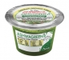
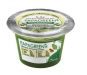
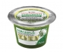
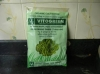
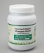
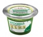
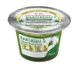

Our Mission
Follow us on vaishnavi organic farm
Company’s Mission
is to increase awareness of organic wheatgrass and Sprouts, as most health promoting breakfast, in major cities and towns, presently affected by diseases and stress. It is well known fact that morning breakfast should be rich and health promoting. Company also provides fresh greens like fresh Bramhi leaves, fresh Alfa leaves, fresh Aloe vera leaves, Fresh Barley grass leaves, fresh moringa leaves, and fresh Papaya leaves, fresh Tulsi leaves at door step.
Company wants to make available these greens Juices on all juice bars in Mumbai.
VAISHNAVI ORGANIC FARM PRODUCTS is the Proprietary firm founded by Mr. V.G.Ghag, in 1991. He is Qualified Post Graduate Agriculturist (Horticulturist), Naturopath and well known senior organic consultant for the cultivation of Organic ,fruits ,vegetables, herbs on hundreds of acres of land around Mumbai, Maharashtra (India).He has worked as associate consultant for two World Bank projects.He has visited Israel in 1999 for upliftment of Agricultural technology in India.He is Ex-Principle of Agricultural School, Kharavate, Ratnagiri.VAISHNAVI ORGANIC FARM PRODUCTS is in cultivation of wheatgrass since 1996.We have food and drug license since 2004.Company also cultivates vital greens since it is well known fact that the processing and preservation of fresh spoils 90 percent of nutrients.Vitogreen Powder and Fresh Vitogreen (Wheat Grass) is cultivated and packed at – VAISHNAVI ORGANIC FARM PRODUCT, Village –Ganegaon, Post-Kadav, Tal – Karjat, Dist –Raigad, (Maharashtra, India), 80Kms, away from Mumbai.Through his articles in “Loksatta”, Leading Marathi Daily News paper, and “Mumbai Samachar”, Leading Gujarati News papers, he has trained thousands of families in Mumbai for the cultivation of wheatgrass.
Products
ADUGREEN
NIRGREEN
ALFAGREEN
WHEATGRASS
VITOGREEN POWDER
VITOGREEN
ASHWAGREEN
PAPAGREEN
BARGREEN
Health Science
Wheat grass is one of the natural green food on the earth and has amazing health benefits in your regular diet such as:
An Energizer:
Wheatgrass and wheatgrass juice increase the energy level. Drinking wheatgrass juice can make you refreshed and energized throughout the day.
Builds Blood:
Chlorophyll molecule in wheatgrass is almost identical to the haemoglobin molecule in human blood. The only difference is that the central element in chlorophyll is magnesium and in haemoglobin it is iron. This similarity helps human body to transform chlorophyll into hemoglobin increasing the red blood cell count. Chlorophyll builds blood cells quickly and also normalizes the blood pressure. Thus it is very good to reduce anemia. Hence it is called as green blood.
Detoxify:
Wheatgrass has great cleansing capabilities. Because of wheatgrass is a great source of Vitamin, B, C, E and beta-carotene, it helps to destroy and eliminate the free radicals. Regular consumption of wheatgrass juice is great for detoxifying of the lymphatic system.
Weight Loss:
Complete nutrition in wheatgrass relieves your body of cravings resulting in the reduction of unnecessary over eating.
Anti-Cancer:
Wheatgrass works as powerful anti-cancer agent. Chlorophyll and beta-carotene in wheatgrass juice help to prevent cancer. According to a study by University of California, wheatgrass helps to reduce side effects during chemotherapy.
Anti-inflammatory:
The high alkalinity property in wheatgrass is very good for the people suffering from inflammatory ailments, like osteoarthritis and rheumatoid arthritis.
Good for Skin:
Chlorophyll in wheatgrass is very good for the treatment of various skin diseases. For first and second-degree burns, the use of chlorophyll has been established as an outstanding aid. Chlorophyll also reduces the foul odor associated with burns. Paste of Wheatgrass Powder made with milk a pinch of Turmeric applied like a face pack helps overcome skin problems such as Acne, Black / White heads, freckles, skin tan etc.
Eliminates Body And Breath Odors:
Wheatgrass juice reduces body and breath odors. It is very effective to naturalize the odor form physical exercise, menstrual odors, and also from food, beverages, tobacco etc.
Body building:
Amino acids are building blocks of protein. Wheatgrass juice contains high amount of amino acids that are great for body building.
Immune system:
Wheatgrass and wheatgrass juice, both are very good to build strong immune system
Mental Problems:
Wheatgrass is very good to prevent any mental memory deterioration and Alzheimer's disease
Wheatgrass juice held in the mouth for 5 minutes will eliminate toothaches and will firm up and tightens gums.
The insoluble fiber in wheatgrass: gently cleanses your digestive tract and promotes regularity.
Wheatgrass juice keeps hair from graying & removes dandruff.
Wheat grass juice increases red blood-cell count and lowers blood pressure.
Wheat grass juice washes drug deposits from the body.
Candidiasis:
Wheatgrass creates an unfavorable environment for bacteria. Regular consumption of wheatgrass juice prevents bacterial growth.
Wheat grass is one of the natural green food on the earth and has amazing health benefits in your regular diet such as:
An Energizer:
Wheatgrass and wheatgrass juice increase the energy level. Drinking wheatgrass juice can make you refreshed and energized throughout the day.
Builds Blood:
Chlorophyll molecule in wheatgrass is almost identical to the haemoglobin molecule in human blood. The only difference is that the central element in chlorophyll is magnesium and in haemoglobin it is iron. This similarity helps human body to transform chlorophyll into hemoglobin increasing the red blood cell count. Chlorophyll builds blood cells quickly and also normalizes the blood pressure. Thus it is very good to reduce anemia. Hence it is called as green blood.
Detoxify:
Wheatgrass has great cleansing capabilities. Because of wheatgrass is a great source of Vitamin, B, C, E and beta-carotene, it helps to destroy and eliminate the free radicals. Regular consumption of wheatgrass juice is great for detoxifying of the lymphatic system.
Weight Loss:
Complete nutrition in wheatgrass relieves your body of cravings resulting in the reduction of unnecessary over eating.
Anti-Cancer:
Wheatgrass works as powerful anti-cancer agent. Chlorophyll and beta-carotene in wheatgrass juice help to prevent cancer. According to a study by University of California, wheatgrass helps to reduce side effects during chemotherapy.
Anti-inflammatory:
The high alkalinity property in wheatgrass is very good for the people suffering from inflammatory ailments, like osteoarthritis and rheumatoid arthritis.
Good for Skin:
Chlorophyll in wheatgrass is very good for the treatment of various skin diseases. For first and second-degree burns, the use of chlorophyll has been established as an outstanding aid. Chlorophyll also reduces the foul odor associated with burns. Paste of Wheatgrass Powder made with milk a pinch of Turmeric applied like a face pack helps overcome skin problems such as Acne, Black / White heads, freckles, skin tan etc.
Eliminates Body And Breath Odors:
Wheatgrass juice reduces body and breath odors. It is very effective to naturalize the odor form physical exercise, menstrual odors, and also from food, beverages, tobacco etc.
Body building:
Amino acids are building blocks of protein. Wheatgrass juice contains high amount of amino acids that are great for body building.
Immune system:
Wheatgrass and wheatgrass juice, both are very good to build strong immune system
Mental Problems:
Wheatgrass is very good to prevent any mental memory deterioration and Alzheimer's disease
Wheatgrass juice held in the mouth for 5 minutes will eliminate toothaches and will firm up and tightens gums.
The insoluble fiber in wheatgrass: gently cleanses your digestive tract and promotes regularity.
Wheatgrass juice keeps hair from graying & removes dandruff.
Wheat grass juice increases red blood-cell count and lowers blood pressure.
Wheat grass juice washes drug deposits from the body.
Candidiasis: Wheatgrass creates an unfavorable environment for bacteria. Regular consumption of wheatgrass juice prevents bacterial growth.
Testimonials
Smt. Sita Talawalkar Partner of Talawalkars Fitness club says "SO GO HAVE YOUR WHEATGRASS SHOT TODAY!!" I have been actively promoting wheat grass therapy in our gyms the last few years. My members have had innumerable benefits in weight loss, rise in hemoglobin levels, immediate recovery in UTI's, relief in joint pain, glowing skin, hair loss reversal. My mother Usha Talwalkar was suffering from a severe stomach disorder there after she started wheatgrass therapy and soon experienced miraculous recovery in her digestive system and her general well-being. Wheatgrass is truly a miracle food and would want everyone to experience its benefits. Jane H.
Dr.JyotiSatpute, Founder, Jyovis Clinique thanks to Vaishnavi! It is our blood that actually helps keep our organs in good condition when our blood is healthy, so is the rest of our body, that's why I take wheatgrass everyday I feel cleaner inside...lighter and rejuvenated. This is my Choice after having this good energizer I liked it much. So, if you want to rejuvenate your blood try VITOGREEN wheatgrass The McPhersons
Dr.ShardaShirke, CEO, Skin Vitals say good bye to the Junk Food. I have consumed VITOGREEN Juice and it is very fresh. I would like to advice to consume VITOGREEN Juice any time in a day John B
Adore Sayani It was the February of 2009......I could not think....I could not eat.......I could not sleep......I was an emotional wreck..... The vet had said to put her to sleep. Lorraine S